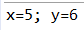

Ввод и вывод
Наиболее простой способ взаимодействия с пользователем представляет консоль. Для взаимодействия с консолью в Java применяется класс System, а его функциональность обеспечивает консольный ввод и вывод.
Вывод на консоль
Для создания потока вывода в классе System определен объект out. В этом объекте определен метод println, который позволяет вывести на консоль некоторое значение с последующим переводом курсора консоли на следующую строку. Например:
- 1| System.out.println("Hello world!");
В метод println передается любое значение, как правило, строка, которое необходимо вывести на консоль. И в данном случае вывод будет следующим:
При необходимости можно и не переводить курсор на следующую строку. В этом случае можно использовать метод System.out.print(), который аналогичен println за тем исключением, что не осуществляет перевода на следующую строку.
Но с помощью метода System.out.print также можно осуществить перевод каретки на следующую строку. Для этого следует использовать управляющую последовательность \n:
- 1| System.out.print("Hello world \n");
Нередко необходимо подставлять в строку какие-нибудь данные. Например, имеются два числа, и необходимо вывести их значения на экран. В этом случае пример может быть таким:
- 1| int x=5;
- 2| int y=6;
- 3| System.out.println("x=" + x + "; y=" + y);
Консольный вывод программы:

Но в Java есть также функция для форматированного вывода, унаследованная от языка С: System.out.printf(). С ее помощью возможно переписать предыдущий пример следующим образом:
- 1| int x=5;
- 2| int y=6;
- 3| System.out.printf("x=%d; y=%d \n", x, y);
В данном случае символы %d обозначают спецификатор, вместо которого подставляется один из аргументов. Спецификаторов и соответствующих им аргументов может быть множество. В данном случае имеется только два аргумента, поэтому вместо первого %d подставляет значение переменной
x, а вместо второго - значение переменной y. Буква d означает, что данный спецификатор будет использоваться для вывода целочисленных значений.
Кроме спецификатора %d можно использовать еще ряд спецификаторов для других типов данных:
- %x: для вывода шестнадцатеричных чисел;
- %f: для вывода чисел с плавающей точкой;
- %e: для вывода чисел в экспоненциальной форме, например, 1.3e+01;
- %c: для вывода одиночного символа;
- %s: для вывода строковых значений.
При выводе чисел с плавающей точкой можно указать количество знаков после запятой, для этого используется спецификатор %.2f, где .2 указывает, что после запятой будет два знака.
Ввод с консоли
Для получения ввода с консоли в классе System определен объект in. Однако непосредственно через объект System.in
не очень удобно работать, поэтому, как правило, используется класс Scanner, который, использует System.in. Пример маленькой программы, которая осуществляет ввод чисел:
- 1 | import java.util.Scanner;
- 2 |
- 3 | public class Program {
- 4 |
- 5 | public static void main(String[] args) {
- 6 |
- 7 | Scanner in = new Scanner(System.in);
- 8 | System.out.print("Input a number: ");
- 9 | int num = in.nextInt();
- 10|
- 11| System.out.printf("Your number: %d \n", num);
- 12| in.close();
- 13| }
- 14| }
Так как класс Scanner находится в пакете java.util, то сначала необходимо его импортировать с помощью инструкции import java.util.Scanner.
Для создания самого объекта Scanner в его конструктор передается объект System.in. После этого можно получать вводимые значения. Например, в данном случае вначале выводится приглашение к вводу и затем вводимое число передается в переменную num.
Чтобы получить введенное число, используется метод in.nextInt();, который возвращает введенное с клавиатуры целочисленное значение.
Класс Scanner имеет еще ряд методов, которые позволяют получить введенные пользователем значения:
- next(): считывает введенную строку до первого пробела;
- nextLine(): считывает всю введенную строку;
- nextInt(): считывает введенное число int;
- nextDouble(): считывает введенное число double;
- nextBoolean(): считывает значение boolean;
- nextByte(): считывает введенное число byte;
- nextFloat(): считывает введенное число float;
- nextShort(): считывает введенное число short.
При вводе чисел с плавающей точкой в консоль разделительный знак определяется локализацией системы.